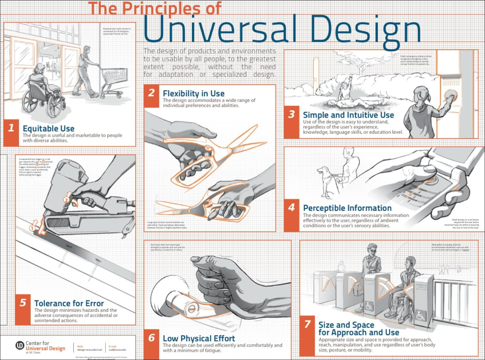

Universal design in Technology
In our thoughts universal design is something sought after by the public but held back by companies because of the profitability.
It is hard to make something everyone agrees is the best solution to a problem, but there are exceptions to that.
Yes, even the USA uses metric also known as the SI-units.
The proof of this you can find here:
nist.gov.
By law they have signed the official metrication of legislation, though it is not a required conversion to companies.
Everything about it makes all our lives easier. The fact that my room is let's say 125cm and I can go to a carpenter and
say I want a 125 cm table, instead of having to convert it to other units and maybe mess up the measurements in the conversion.
Something that we think people might take for granted is rollable shelfs on dishwashers.
It was protected by a patent once, but when it was made public, every manufacturer started to use it in their dishwashers.
We use it every time we wash dishes meaning almost every day, just imagining having to stretch your hand all the way inn
seems like a grueling task. You also have companies like Tesla that made their patents available for the public which is what
many companies should follow so that we can develop more amazing things together instead of limiting each other.
The Tesla patents you can find here: tesla.com.
We think time is the most used technologic invention, and one of the first.
Imagine if a day was divided in 7.5/15 instead of 12/24 hours, if we were to have different time systems,
we believe the world would be in much more chaos.
Just the fact that the whole world uses the same time system is reassuring when traveling, going to event, and meeting up on time.
The world uses the UTC time standard and you can find more info on it here:
timeanddate.com.

The Concept of Universal Design
The concept surrounding universal design consists of multiple different principles. This principle is known as social equality,
human diversity, accessibility and usability and participatory processes. We have decided to dive a bit into the first principle,
social equality. What social equality is all about is the concept of everyone having the same amount of opportunity in life,
no matter your race, no matter what kind of disabilities you might have and no matter your age or your financial situation.
If technology developers take the principle of social equality into account while designing and developing their product,
they can assure that the usability of their product is good for everyone. There is a research paper done about the economic
appraisal of universal design in transport from Norway. There you can find the benefits and costs of different projects about
transport; you can find the link here:
sciencedirect.com.
The Importance of Universal Design
Imagine yourself being bound to a wheelchair or that you have a broken leg and have no other choice than to use crutches.
You are one your way to visit a friend and get off at a train station.
Suddenly you realize that the only way to get further is by going up a set of stairs with no elevator available.
In this situation your disability gives you a near 0 percent chance of conveniently getting up the staircase compared to people
without this disability. You can find other examples of problems people in wheelchair face here:
wheelchairtraveling.com".
This is an example of what can happen if the principle of social equality is left out of the design and developing process in
a project. On the other hand, if the principles of social equality would have been thought of during the design and developing
process in this case, we could have seen a situation where everyone would have had a good usability of their product,
which shows the importance of the social equality principle in universal design. If you are at a stage where you are developing
something you will find all the information you will need about the principles of Universal Design here:
cloudfront.net/pdf.